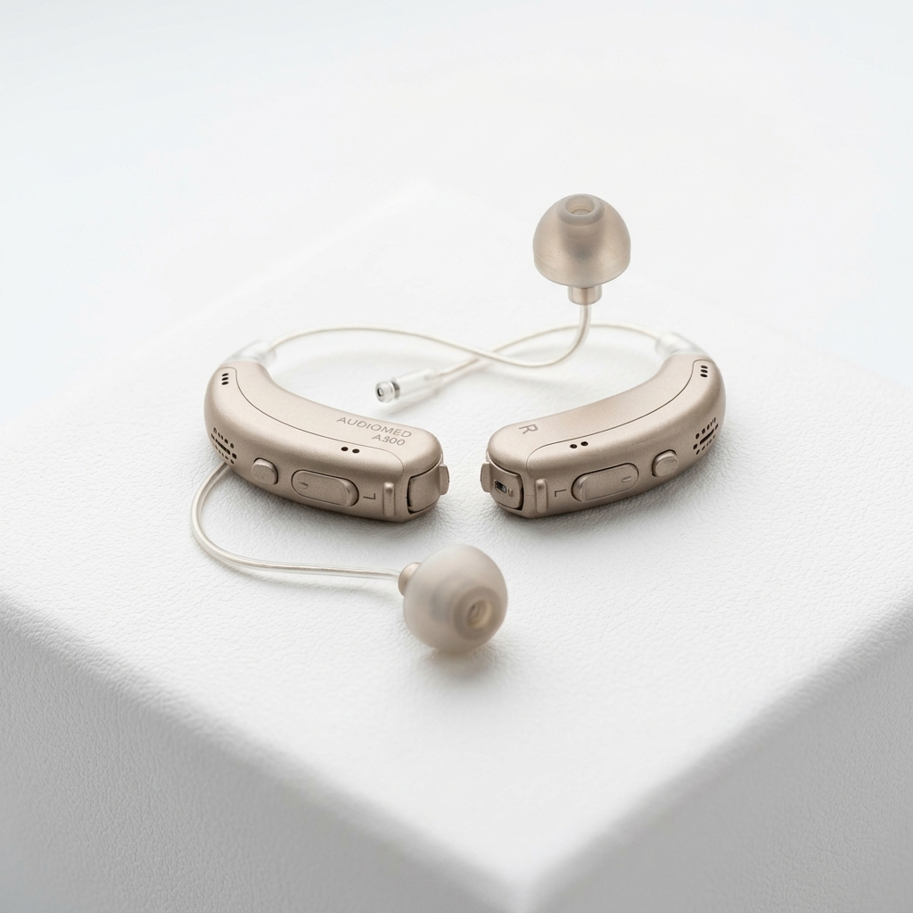

Audífonos Clínicos de Alta Tecnología en Viña del Mar
Adaptación personalizada con tecnología de vanguardia y seguimiento profesional continuo.
¿Qué son los audífonos clínicos?
Los audífonos clínicos son dispositivos médicos diseñados para amplificar y procesar el sonido de manera personalizada. La configuración del audífono se realiza según la evaluación auditiva y las necesidades individuales de cada persona, permitiendo una experiencia cómoda y adaptada a su estilo de vida.

¿Para quiénes pueden ser recomendados?
Los audífonos pueden beneficiar a personas que experimentan:
- Dificultad para seguir conversaciones, especialmente en ambientes ruidosos
- Necesidad de subir el volumen de la televisión o dispositivos electrónicos
- Sensación de que las personas "murmuran" al hablar
- Fatiga auditiva al final del día por el esfuerzo constante de escuchar
- Pérdida auditiva diagnosticada por un profesional
Nuestro proceso de evaluación y adaptación
En BeopenSound no vendemos audífonos de forma genérica. Nuestro enfoque es estrictamente profesional y personalizado:
- Evaluación auditiva completa: Realizamos una audiometría clínica para determinar el tipo y grado de pérdida auditiva
- Selección del dispositivo: Recomendamos el audífono más adecuado según tus necesidades, estilo de vida y presupuesto
- Prueba personalizada: Puedes experimentar el audífono antes de tomar una decisión
- Programación clínica: Configuramos el dispositivo con software especializado para tu audiometría específica
- Seguimiento continuo: Realizamos ajustes y calibraciones periódicas para asegurar tu comodidad
Tecnología disponible
Trabajamos con marcas líderes a nivel mundial en tecnología auditiva:
- Interton GN: Audífonos con conectividad y diseño ergonómico
- Danavox GN: Tecnología avanzada del grupo GN Hearing
- Audio Service: Soluciones auditivas de precisión alemana
Seguimiento y calibración
La adaptación de un audífono no termina con la entrega del dispositivo. En BeopenSound realizamos un seguimiento profesional que incluye ajustes de programación, limpieza del equipo y evaluaciones periódicas para asegurar que tu audífono funcione de manera óptima a lo largo del tiempo.
Preguntas frecuentes sobre audífonos
¿Cómo saber si necesito audífonos?
Si notas que te cuesta seguir conversaciones, subes el volumen de la TV más de lo habitual, o sientes fatiga al final del día por el esfuerzo de escuchar, es recomendable realizar una evaluación auditiva profesional. En BeopenSound podemos orientarte.
¿Qué marcas de audífonos trabajan en BeopenSound?
Trabajamos con marcas reconocidas a nivel mundial: Interton GN, Danavox GN y Audio Service. Cada una ofrece distintas gamas y tecnologías para adaptarse a diferentes necesidades auditivas y presupuestos.
¿Cuánto demora la adaptación de audífonos?
El proceso de adaptación comienza con una evaluación auditiva y prueba del dispositivo. La adaptación inicial puede realizarse en una o dos sesiones, pero el seguimiento y ajustes finos continúan durante las semanas siguientes para asegurar tu comodidad.
¿Puedo probar los audífonos antes de comprarlos?
Sí. En BeopenSound ofrecemos una prueba de audífonos para que puedas experimentar la diferencia antes de tomar una decisión. Agenda tu evaluación y prueba sin compromiso.
¿Listo para escuchar mejor?
Agenda una evaluación y prueba de audífonos con nuestro equipo profesional en Viña del Mar.
Agenda una evaluación y prueba de audífonos